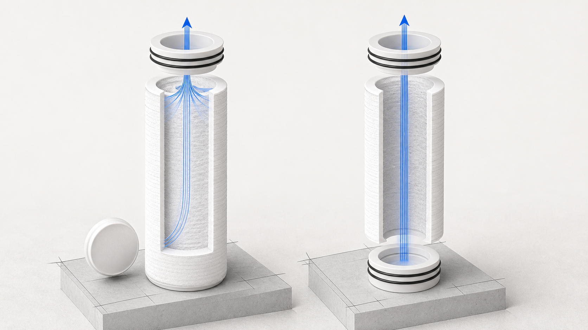

PP Melt-Blown Sediment Filter Cartridges — SOE and DOE
PP · accepted facts onlySOE and DOE describe cartridge end geometry, not filtration performance. This page defines both terms and publishes only the accepted DOE dimensions visible in the supplied Yuchen specification screenshots; the supplied crop contains no SOE numeric table.

Verified technical information
Source-listed options must be confirmed against the quotation and production drawing.
Configuration
- SOE
- 1 × open end + 1 × closed end
- DOE
- 2 × open end
DOE · Regular / Big Blue
| Variant | Length | OD | ID | Micron range |
|---|---|---|---|---|
| 10 in | 254 ± 2 mm | 61 ± 2 mm | 28.3 ± 0.3 mm | 0.5–100 μm |
| 20 in | 508 ± 2 mm | 61 ± 2 mm | 28.3 ± 0.3 mm | 0.5–100 μm |
| 30 in | 762 ± 2 mm | 61 ± 2 mm | 28.3 ± 0.3 mm | 0.5–100 μm |
| 40 in | 1016 ± 2 mm | 61 ± 2 mm | 28.3 ± 0.3 mm | 0.5–100 μm |
| 10 in Big Blue | 254 ± 2 mm | 110 ± 2 mm | 28 mm / 30 mm | 0.5–100 μm |
| 20 in Big Blue | 508 ± 2 mm | 110 ± 2 mm | 28 mm / 30 mm | 0.5–100 μm |
DOE · Core
| Variant | Length | OD | ID | Weight |
|---|---|---|---|---|
| Core 1 | 508 ± 2 mm | 61 ± 2 mm | 30 ± 0.3 mm | 240 ± 10 g |
| Core 2 | 762 ± 2 mm | 61 ± 2 mm | 30 ± 0.3 mm | 360 ± 10 g |
| Core 3 | 1016 ± 2 mm | 61 ± 2 mm | 30 ± 0.3 mm | 480 ± 10 g |
| Core 4 | 1016 ± 2 mm | 63 ± 2 mm | 30 ± 0.3 mm | 520 ± 10 g |
DOE · Custom
| Variant | Length | OD | ID | Weight | Micron range |
|---|---|---|---|---|---|
| 20.5 in | 525 mm | 47.5 ± 2 mm | 28 ± 0.3 mm | 160 ± 10 g | 0.5–100 μm |
| 15 in | 381 mm | 61 ± 2 mm | 28 ± 0.3 mm | 200 g | 0.5–100 μm |
| 22 in | 558 mm | 61 ± 2 mm | 28 ± 0.3 mm | 240 ± 10 g | 0.5–100 μm |
| 42 in | 1066 mm | 61 ± 2 mm | 28 ± 0.3 mm | 460 ± 10 g | 0.5–100 μm |
Surface options: Smooth · Points · Micro-Groove · Deep Groove. Source-listed options must be confirmed against the quotation and production drawing.
How to select
- Send the application, feed-water condition and required sediment-control stage.
- Confirm cartridge length, OD, ID, micron rating, end configuration and seal material.
- Confirm the housing interface, quantity, packaging and required documents.
How to select
What is the difference between SOE and DOE?
SOE has one open end and one closed or adapter end. DOE has two open ends. These terms describe end geometry, not filtration performance.
What should a buyer confirm for PP Melt-Blown Sediment Filter Cartridges — SOE and DOE?
Confirm the cartridge length, outside and inside diameters, micron rating, end configuration, seal material and housing fit before quotation.
Request a technical quote: PP Melt-Blown Sediment Filter Cartridges — SOE and DOE
Confirm the cartridge length, outside and inside diameters, micron rating, end configuration, seal material and housing fit before quotation.